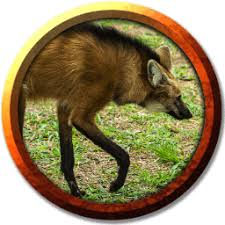

Fauna do Cerrado
• Lobo-guará (Chrysocyon brachyurus): O maior canídeo da América do Sul, conhecido por sua pelagem avermelhada e pernas longas.
• Onça-pintada (Panthera onca): Um dos grandes felinos do Brasil, é um predador de topo e possui uma pelagem característica com manchas.
• Tamanduá-bandeira (Myrmecophaga tridactyla): Este mamífero é conhecido por sua longa língua e dieta baseada em formigas e cupins.